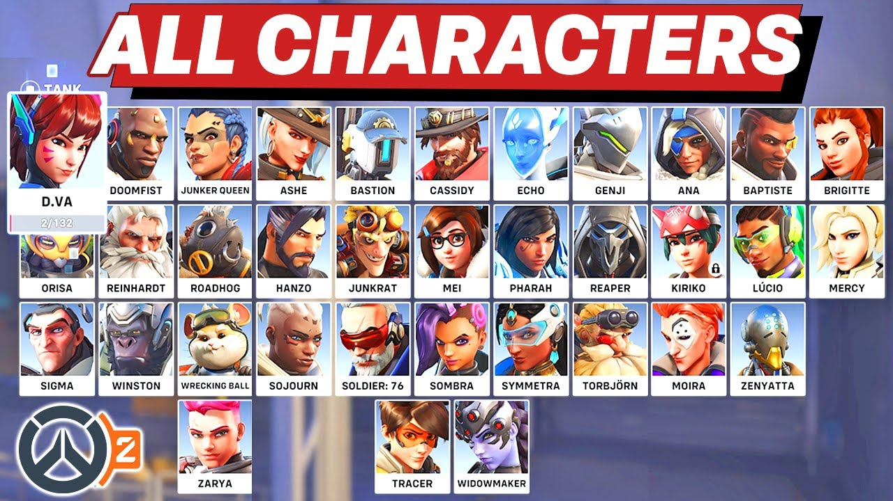

Gameplay
Ris an objective-based game, where two teams of six players compete. Servers are hosted by Blizzard. There are five modes of play: Quick Play, Competitive Play, vs AI, Weekly Brawl, and Custom Games, as well as a Practice Range and Tutorial.
All Hero Character

Maps
Maps are the environment in which Overwatch is played. Overwatch 2 features several different maps based on locations, both fictional and real, around the world. Most maps have an objective the players must accomplish to win the match.